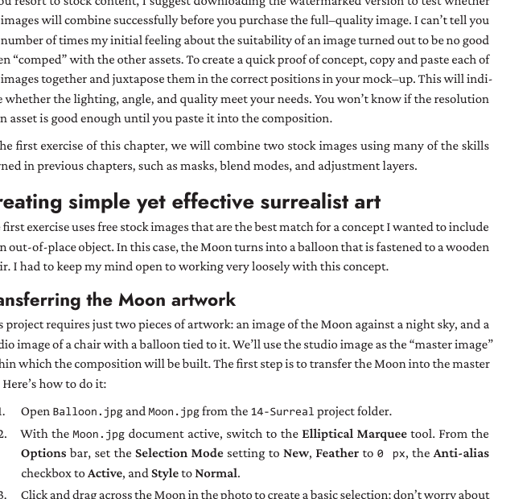

Step 1
Complete the phone-mask preflight
Course mask laboratory
Hotkey: B · D · X
Expected result
Student hides and restores one edge and explains black versus white
Student hides and restores one edge and explains black versus white
Why this matters
The old assignment becomes retrieval evidence, not repeated production
The old assignment becomes retrieval evidence, not repeated production
Warning — common failure
Spending the class rebuilding the phone
Spending the class rebuilding the phone
Repair it
Stop after the mask explanation and move to the new sources
Stop after the mask explanation and move to the new sources